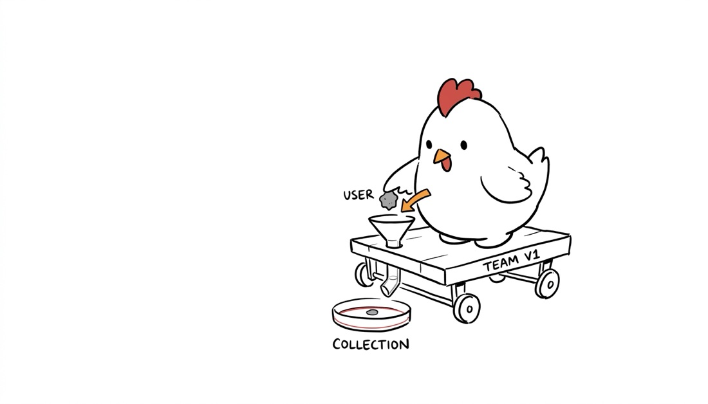
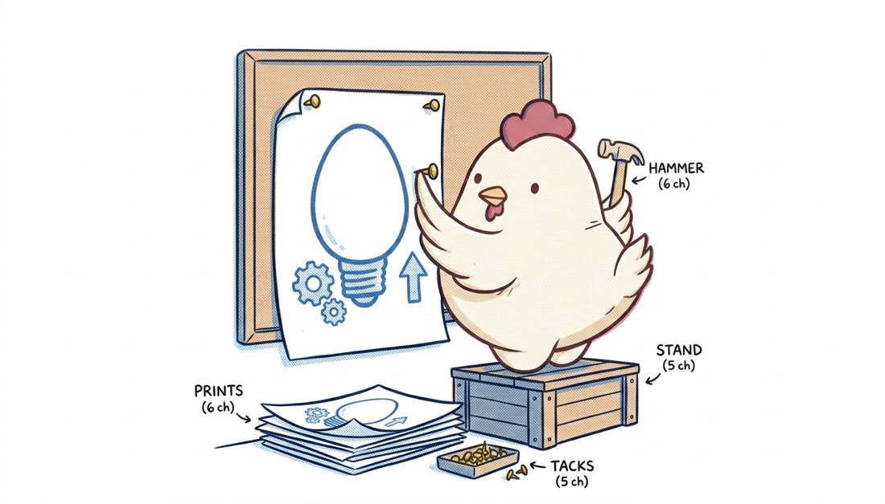
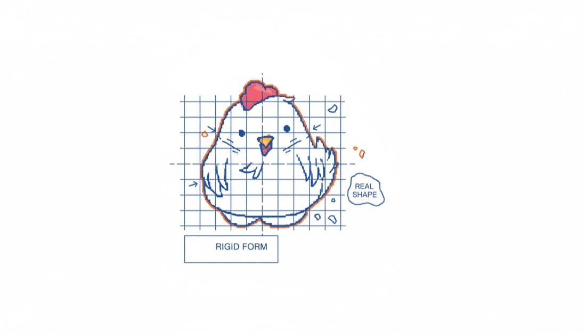
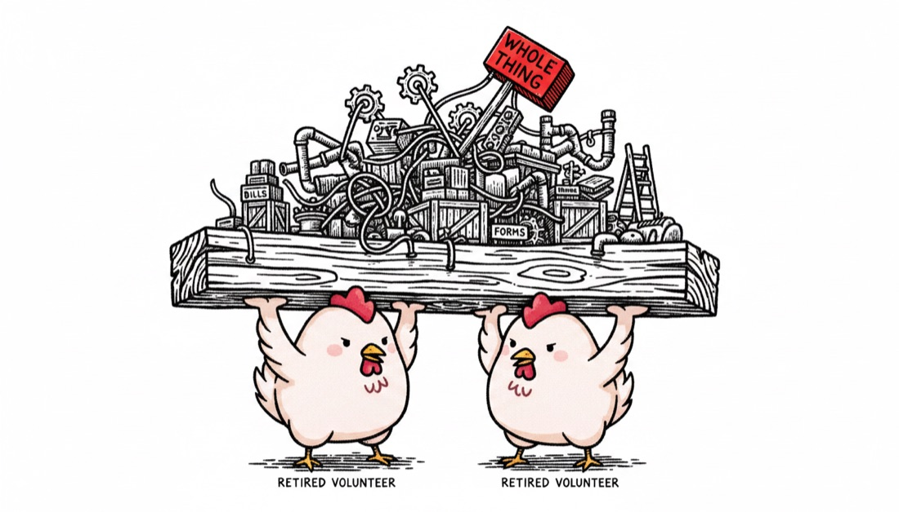
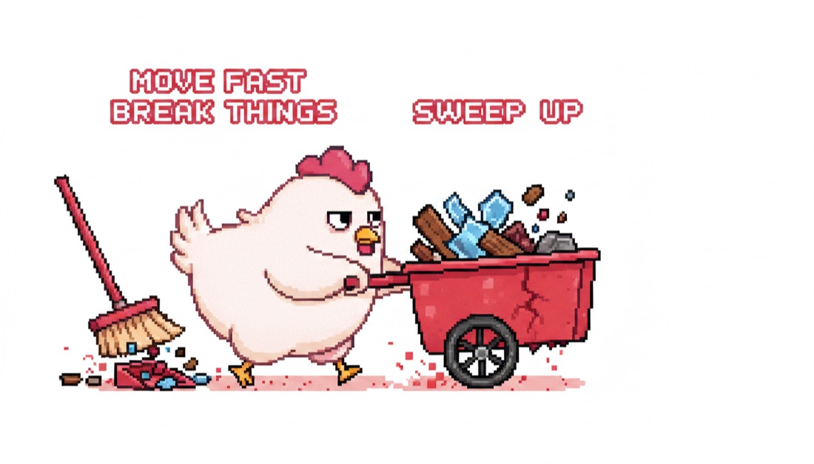
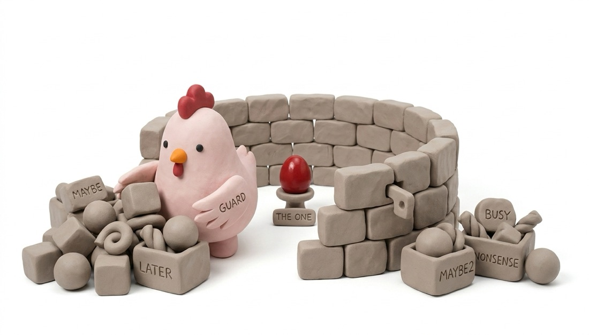
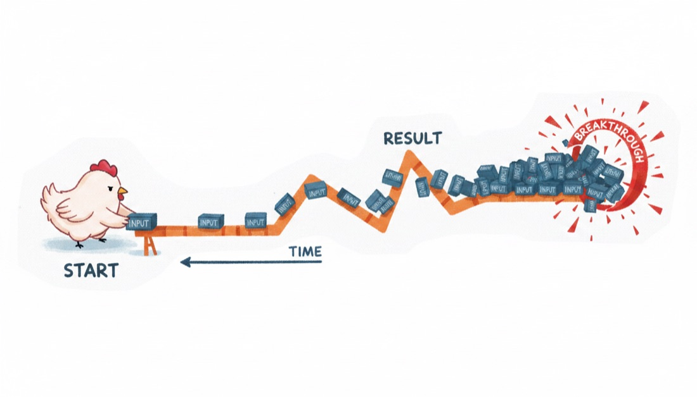
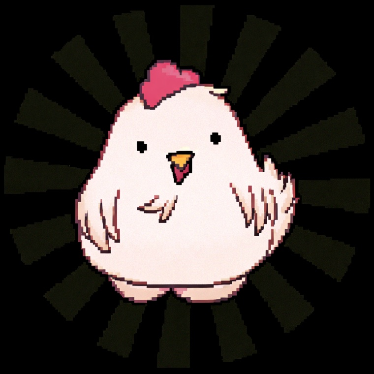

Nib turns an idea — or a whole article — into original, white-background editorial illustrations starring an avatar you own. One image, one idea. No stock art, no prompt fiddling.

Marker
Riso
Blueprint
Woodcut
Pixel
Clay
Gouache
Your avatar →One chicken, seven looks. Bring any character — it stays on-model across every image.
Hand Nib a post and it finds the load-bearing moments — the judgment, the trap, the before/after — and draws each one as a single scene. Not one image per paragraph. The ones that matter.
A mascot, a logo character, any avatar. It becomes the reference on every render, so your character stays on-model — forever yours.
A single concept, or a whole post. Nib plans a shot list of the ideas worth illustrating and picks a look.
White-background 16:9 illustrations, your character performing each idea, ready to drop into the post.
One house methodology, the look is a parameter. Pick one per piece so a set reads as a series.
The skill is free and open source. Image generation runs on your own OpenRouter key (google/gemini-2.5-flash-image). No subscription, no markup.
Nib ships as an agent skill — one command, no app to download.
npx skills add caezium/nib --skill nibcodex plugin add caezium/nibAdd plugin: caezium/nibgemini extensions install caezium/nibpython3 and an OPENROUTER_API_KEY. Prefer a desktop app? One is in the works.Once it's installed, talk to your agent in plain English — no flags, no prompt-craft. Tap a prompt to copy it.